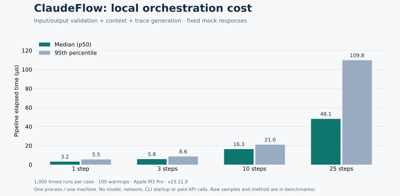

Open-source engineering · TypeScript
ClaudeFlow: contracts around model calls
A TypeScript library for LLM workflows with typed step boundaries and explicit control flow. A closer look at schema validation, backed by a reproducible local benchmark.
Make the workflow part of the program
A repeated task often starts as a long prompt: inspect something, produce a result, check it, then decide what happens next. As that task becomes part of an application, those transitions deserve explicit code. A retry should have a limit. A downstream step should receive the shape it expects.
ClaudeFlow is a small TypeScript library for expressing that structure. A step declares a prompt and optional Zod input and output schemas. A pipeline composes steps with loops, branches or maps; a runtime supplies the model response. The same pipeline interface supports Claude CLI, the Claude API and deterministic mock responses.
Outputs are stored by step ID, so a later prompt can refer to an earlier result. The execution result includes a trace with step status and timing. The code also supports YAML definitions, deterministic tool adapters and checkpoints. Read the implementation.
Measure the work the library actually does
The benchmark below measures local pipeline orchestration with MockRuntime. It runs sequential typed steps with fixed responses and times the complete pipeline invocation. That includes schema validation, context updates and trace construction.

| Sequential steps | Median | 95th percentile | Timed runs |
|---|---|---|---|
| 1 | 3.167 μs | 5.458 μs | 1,000 |
| 3 | 5.792 μs | 8.584 μs | 1,000 |
| 10 | 16.333 μs | 21.000 μs | 1,000 |
| 25 | 48.083 μs | 109.750 μs | 1,000 |
The timer is process.hrtime.bigint(). Pipeline construction and fresh mock construction happen outside the timed region. Percentiles use nearest rank over the recorded samples. These are repeated observations from one process on one machine, with a fixed order of pipeline sizes; JIT compilation, garbage collection and system load can affect another run.
Inspect the recorded results and the benchmark script. This measurement describes the tested pipeline shapes on the recorded machine; it does not measure model quality, end-to-end API latency or a performance advantage over another framework.
Keep a case study separate from a comparison
The repository also preserves an earlier Claude CLI exercise. Each task was run once, and the multi-step task used different timeout budgets. Those runs illustrate execution behavior, but cannot establish a general speed, cost or quality advantage. The case-study notes explain those limits.
A contract belongs at the shared boundary
Reviewing the implementation exposed a gap between the intended contract and the runtime path. An adapter could return a pre-parsed structured value, and the pipeline accepted that value without applying the output schema. The mock runtime and a custom adapter could therefore bypass a check that callers expected the pipeline to enforce. LLM step inputs also lacked the validation already used for deterministic steps.
The fix puts validation in the pipeline itself. It parses inputs before calling a runtime, then applies the output schema to the response regardless of which adapter produced it. Adapters extract JSON; the pipeline owns validation and schema transforms. This keeps transforms from being applied twice.
| Case | Enforced behavior |
|---|---|
| Invalid step input | Fail validation before invoking the runtime. |
| Wrong structured output | Use the configured retry and fallback path. |
| Schema defaults or transforms | Use the parsed value; apply output transforms once. |
| A valid falsy or nullable output | Check whether a value is present, then validate its schema. |
A regression test for this boundary must exercise a runtime that returns an invalid structured object. Testing only malformed text misses the bypass. Read the regression tests alongside the execution path.
Start with a fixture you can inspect
Run this example from a built source checkout to exercise a classification step without contacting a model. The fixture is deliberately simple: the purpose is to test the contract and the execution path before substituting a live runtime.
import { step, pipeline, z, MockRuntime } from "claudeflow";
const classify = step("classify")
.input(z.object({ text: z.string().min(1) }))
.output(z.object({
category: z.enum(["bug", "question"]),
}))
.prompt("classify this issue: {text}")
.retry({ maxAttempts: 2 });
const runtime = new MockRuntime({
classify: { category: "bug" },
});
const result = await pipeline("issue-triage")
.step(classify)
.run({ text: "The save button does nothing." }, { runtime });
console.log(result.output); // { category: "bug" }
console.log(result.trace.status); // "completed"Changing the fixture to { category: "unexpected" } exercises output validation. Changing the input to an empty string exercises input validation. Neither test says whether a live model will classify a real issue correctly; that is a separate evaluation with labelled examples.
Run the checks and benchmark
The repository contains the test suite, TypeScript checks and benchmark source. From a checkout, run:
git clone https://github.com/landigf/claudeflow.git
cd claudeflow
npm ci
npm test
npm run check
npm run build
node benchmarks/orchestration.mjs \
benchmarks/results/my-machine.jsonThe benchmark uses a local mock and requires no API credentials. Running a real Claude CLI or API adapter depends on your account and its applicable usage charges. Keep the saved result alongside its code revision when comparing later runs.